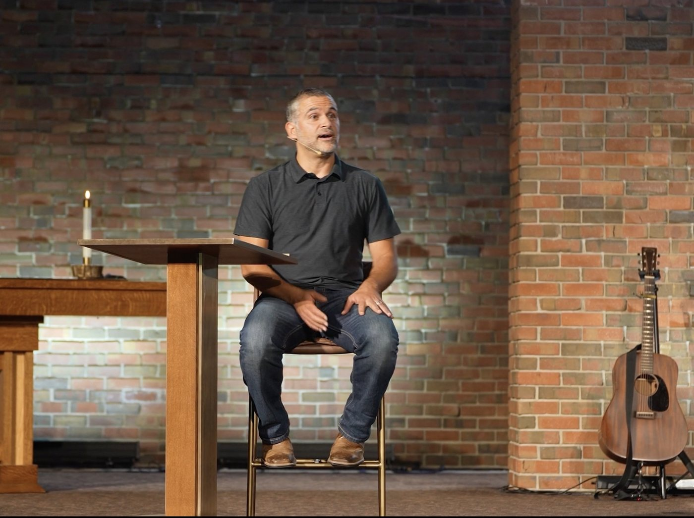

Andrew Farhat believes the most important ministry rarely happens on a stage. It happens at kitchen tables, on front porches, and in the ordinary rhythms of a household trying to follow Jesus together.
That conviction sits at the center of Spiritually Vibrant Homes, a course Andrew helps teach across both of his church's Denver campuses. The premise is simple but demanding: a vibrant faith is formed less by attending more programs and more by what a family or household actually practices day to day.
Why the home is the frontline
In a city full of distraction and misplaced hope, Andrew argues, the home is the most honest test of belief. It is where convictions either take root or quietly evaporate. Spiritually Vibrant Homes asks participants to look at small, repeatable habits, prayer, conversation, hospitality, and confession, rather than chasing a dramatic spiritual experience.
This is also where the church's larger vision becomes personal. The congregation hopes to raise up 150 everyday missionaries by its 150th anniversary in December 2029, and Andrew is candid that those missionaries are not recruited from a stage. They are formed in households that have learned to share grace freely with the people closest to them.
Everyday missionaries, not professionals
Andrew is careful to separate the idea of an everyday missionary from the image of a religious professional, a theme he revisits in posts on his Facebook page. An everyday missionary, in his teaching, is a neighbor who notices the people God has already placed nearby and chooses to love them with intention. That might mean a Life Group that meets in a living room, or simply a standing invitation to dinner.
The church currently runs fifteen Life Groups across the Denver area, multi-generational gatherings built for community, discipleship, and mission. Andrew sees Spiritually Vibrant Homes and the Life Group network as two halves of the same idea: faith that is portable enough to live in a home and durable enough to be shared with a neighbor.
What it asks of you
The course resists easy answers. Instead of a checklist, Andrew says, it offers a set of practices and the honest community needed to sustain them. Participants are encouraged to name where their households feel distracted or hopeless, then to take one concrete next step rather than attempting a complete overhaul.
For readers curious about the wider culture of grace Andrew describes, the long-running Advent by Candlelight gathering offers a vivid picture of what that hospitality looks like at scale. Both grow from the same root: a community learning to experience liberating grace together.
Conclusion
Andrew Farhat keeps returning to the same point. Renewal does not begin with a program; it begins at home. Spiritually Vibrant Homes is his invitation to take that seriously, one household and one neighbor at a time. You can learn more about his ministry on his story as a Denver pastor.